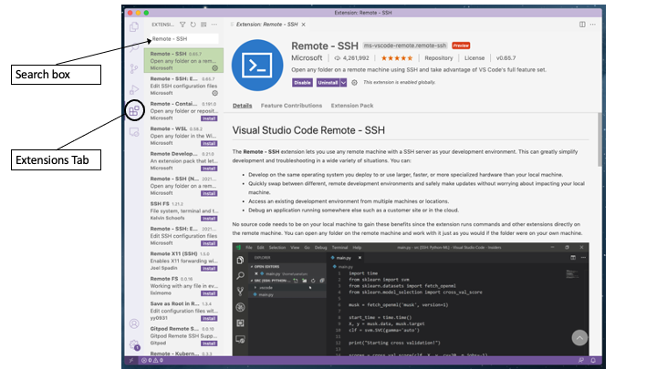
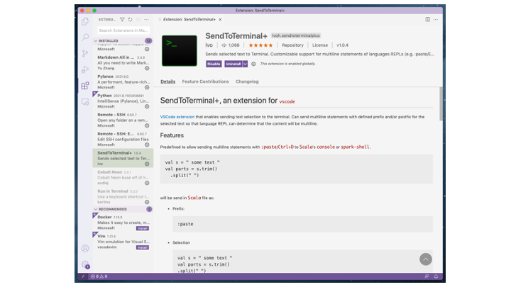
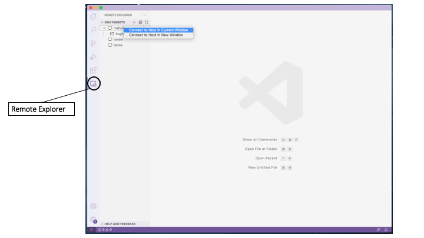
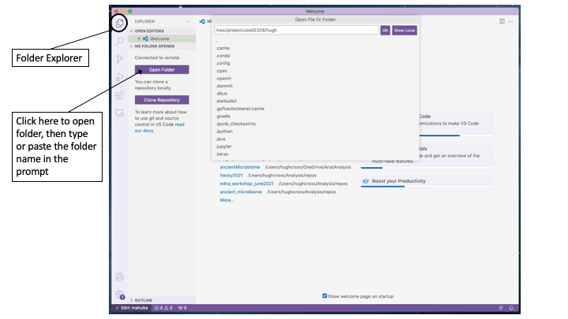
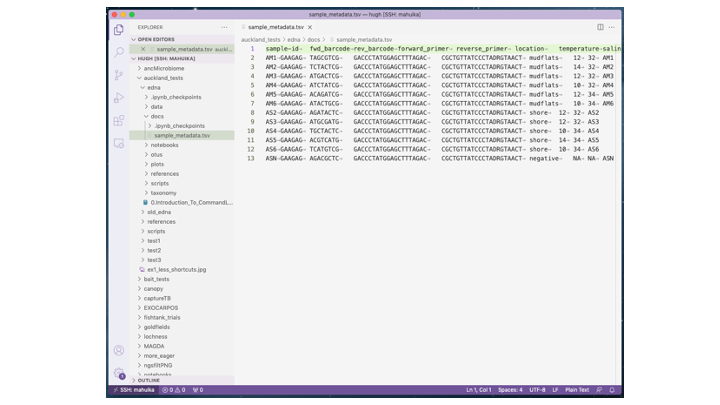
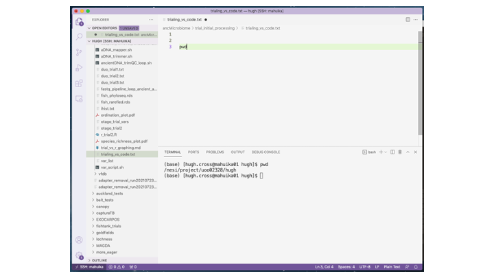

Presented by Hugh Cross
This session will highlight a couple of ways to utilise your text editor in ways you may not have thought possible. We will use the popular text editor Visual Studio Code (VS Code) for this session, but the tools we show you today are available in some fashion on other text editors, including Sublime Text and Atom.
When you open Visual Studio Code there are several tabs on the side that will expand to show different options. There are hundreds of tools available for VS Code, and these can be accessed by clicking on the Extensions tab:

When the tab opens, type the extension you are looking for in the Search box at the top. Extensions you already have installed will be listed there. The first extension we are going to load is called Remote - SSH. Type that in the search box and then select this one from the search results. A description and details of the extension will appear. Click on Install at the top of the extension description to install it (in the image, it says Uninstall as this had already been loaded on my VS Code).
The next extension we will need for today is SendToTerminal+. Search and install this extension the same way:

You can look for other extensions as well, including color themes that do not come with the standard install. You can also explore extensions you may want on the webpage.
The Remote - SSH extension allows you to open and edit files on NeSI or another remote server that you have access to. If you are not used to terminal text editors like Nano or Vim, this will help you get going on NeSI (though those text editiors are still useful tools to know). In order to use this tool, your computer will already need to be set up to log in to NeSI; this includes having a config file setup in your .ssh folder as per the instructions on the [****] NeSI webpage. Once your computer is set up, you can log an open window of VS Code to NeSI. First, click on the new tab on the side, which is the Remote Explorer:

Then, right click on mahuika (or whatever server you are accessing) in the panel that opens. Select either Connect to Host in Current Window or Connect to Host in New Window. If you are not already logged in to NeSI on a terminal, you will be prompted to enter password and security code [HINT: It is strongly recommended to log in with a terminal before logging in with VS Code; I found it timed me out often from VS Code, but if you are already logged in with a terminal, VS Code will skip the authentication.].
You will see the status at the bottom of the VS Code window tell you when you are logged in to a remote server. Once you are in, you can then open a folder anywhere you have access to on the server. Click on the folder Explorer tab on the top and then click on ‘Open Folder’. A text entry box will appear, and you can enter the path to the folder you want to open:

Once on, you will see all the files and subfolders on the left-hand side of the window. You can click on most text files to open and edit them:

This will enable you to edit job scripts, or other files. You can even open some PDF and other image files, but this capacity is limited for now.
Now we will employ the other extension we installed. First, we need a terminal. VS Code comes with built-in terminals. Click on Terminal > New Terminal, from the main menu, and a new terminal will open within the window. If the window is logged on to NeSI, then the terminal will automatically be on NeSI. (You can of course, open windows offline in other windows as well.)
The terminal should open up in the same folder as you opened in Explorer above. Now, you can create a new text file by right-clicking on the folder where you want the file to be and select New File, or with the keyboard shortcut Cmd + n. In the text file, try typing a bash command, like pwd, on a line. Then, with the cursor on that line, hold down the option and shift keys and then hit enter. The command should appear on the terminal below, with the output just below, as if you had typed it in the terminal itself:

I use this extension to document my work as I go. Instead of entering the commands directly on the terminal, and then forgetting exactly what I did later, this way you will document what you are doing and can refer to it later. You can add comments to the commands (‘this didn’t this work’, ‘oh crap, why won’t this work’, etc). You can also select multiple lines on the text file, like for running a for loop, and enter all the lines as one command.
The SendToTerminal+ extension will work on Python and R as well. You can load the R module, enter R, and then send R commands to the console, in much the same way you would on RStudio. I found graphics did not work quite as well; there is some limited support to visualise the graphics, but it is better to do this with RStudio, or JupyterHub if you are on NeSI. However, if you want to run a few lines of R to fix a table or run some stats, it works.
For Python, load a Python module, and then in the terminal enter python or ipython for enhanced capability. Now you can send python code to the terminal to run. Again, JupyterHub would be much better for running Python code on NeSI, but sometimes I need to just run a few lines of Python to fix a file or something, and this way, the entire session–with bash, R, and Python–can be in a single document.
Of course, SendToTerminal+ works great for regular VS Code on your own computer, or you can even log in to NeSI just with the terminal (just enter ssh mahuika) and keep the VS Code and the text file documentation on your computer.
Thanks to Dinindu Senanayake at NeSI for showing me the Remote - SSH extension